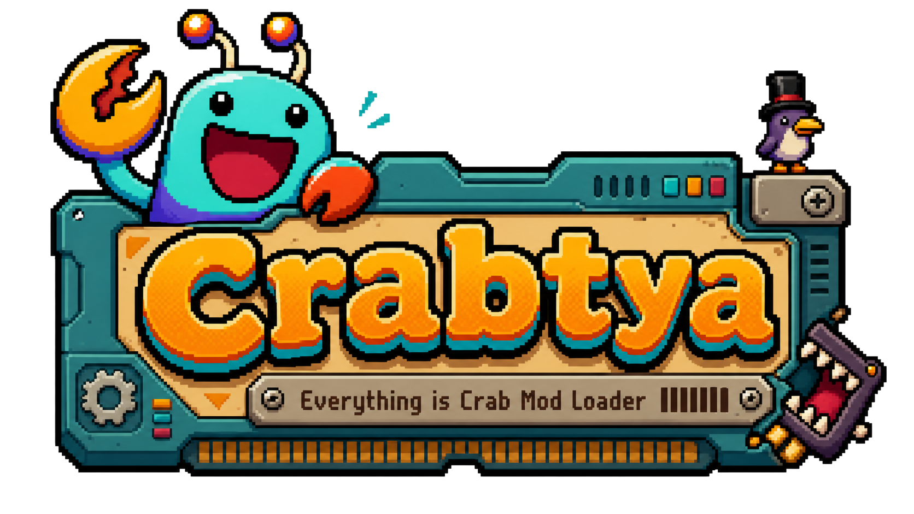

What It Is
A native-feeling loader UI with a small Crabtya status label, a MODS main-menu button, and a dedicated in-game mod settings page.
Crabtya is a folder-based mod loader for Everything is Crab. Drop mod folders into game/Mods, launch the game, and run content + DLL mods with isolation so one bad mod does not break everything.

A native-feeling loader UI with a small Crabtya status label, a MODS main-menu button, and a dedicated in-game mod settings page.
Use content mods and managed DLL entrypoint mods. Keep mods organized by folder with per-mod manifests and clear load behavior.
Broken manifests and failing mod entrypoints are isolated. Path handling stays inside each mod folder to avoid accidental escape paths.